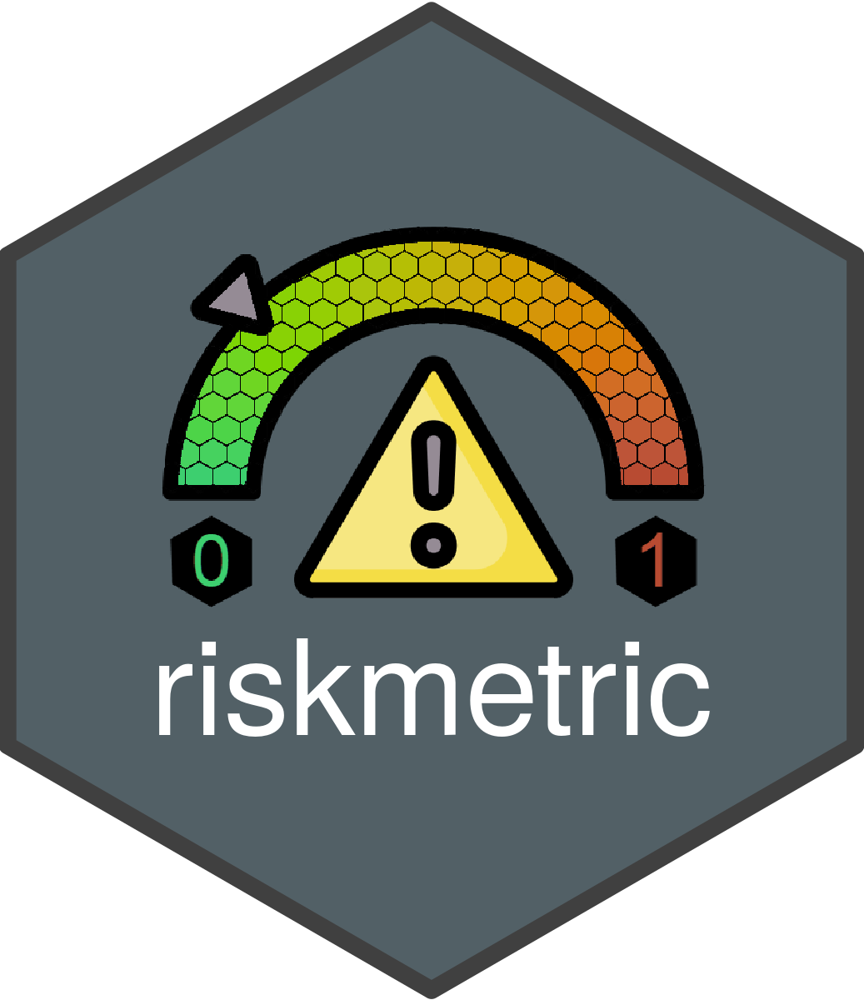

riskassessment is an R package containing a shiny front-end to augment the utility of the riskmetric package within an organizational context. We’re honored to announce this app was recently awarded the title for “Best App” at Shiny Conf 2023 (see Recognition section below).

riskmetric is a framework to quantify an R package’s “risk of use” by assessing a number of meaningful metrics designed to evaluate package development best practices, code documentation, community engagement, and development sustainability. Together, the riskassessment app and the riskmetric package aim to provide some context for validation within regulated industries.
The app extends the functionality of riskmetric by allowing the reviewer to:
- analyze
riskmetricoutput without the need to write code in R - contribute personalized comments on the value of individual metrics
- categorize a package with an overall assessment (i.e., low, medium, or high risk) based on subjective opinions or after tabulating user(s) consensus after the evaluating metric output
- download a static reports with the package risk, metrics outputs, and reviewer summary & comments, plus more
- store assessments in a database for future viewing and historical backup
- user authentication with privileges & admin-defined roles to manage users and tasks performed in the app
Echo-ing {riskmetric}’s Approach to Validation 
Validation can serve as an umbrella for various terms, and admittedly, companies will diverge on what may be the “correct approach”. The riskassessment app is built on a rismetric-foundation, whose developers follow the validation philosophy proposed in this white paper published by the R Validation Hub. As such, the scope of riskassessment and riskmetric are only designed to support decision making from that view point. The full robustness and reliability of any software may (and likely will) require deeper inspection by the reviewing party.
Note: Development of both riskassessment and riskmetric were made possible thanks to the R Validation Hub, a collaboration to support the adoption of R within a biopharmaceutical regulatory setting.
Usage
If you are new to using the riskassessment app, welcome! We’d highly encourage you to start exploring the demo version of the app currently deployed on shinyapps.io. There, you’ll find a number of pre-loaded packages just waiting to be assessed. Hands on experience will help you become familiar with the general layout of the app as you poke around and explore.
With that said, you should immediately recognize that the app requires authentication, since it’s intended use is within an organization. There are several pre-defined roles, but the most important is the admin user. By default, the admin can add/delete users, download an entire copy of the database, and modify the metric weights used in calculation of risk scores, define custom decision categories, and automation rules base on risk scores. The demo version of the app tells prompts you with how to log in initially. However, if you launch the app.R file locally, the admin user will have to leverage the password QWERTY1 initially. If you log in with this credential, the app will immediately prompt you to change your password and repeat the the process with your new credentials.
If you want a quick overview of the project and demo of the application, we highly recommend watching the following video walk through from Shiny Conf 2023. At the conference, riskassessment was voted “best application” by conference attendees! The app was also featured at Rstudio::Global 2021.
Installation
We recommend to run/deploy this application in a controlled development environment. Of course, you can install the latest version from GitHub using the code below, but it doesn’t take into consideration other environment dependencies…
# DON'T RUN THIS CODE! There's a better way!
remotes::install_github("pharmaR/riskmetric")
remotes::install_github("pharmaR/riskassessment")
# Run the application
riskassessment::run_app()For example, what if you are using a different version of riskmetric than our dev team? Thus, the development team can’t guarantee it’s stability, and we recommend you clone the repo’s R project locally instead. Once cloned/ forked, run the following code in order to take advantage of our renv.lock file which set’s up the project dependencies:
# First, clone the repo from GitHub, then...
# Get dependcies synced using {renv}
renv::activate()
renv::restore()After this step is complete, you can simply run the contents of app.R to launch and/or deploy the application with default settings! For more information on our dev philosophy as it pertains to package management, please read the “Using renv” article. Then, learn how to manipulate the app’s configuration away from the defaults by reading the guide on “Deployment” which covers how to use the app’s configuration file to tailor the app to your needs.
User Guides and User Feedback
We’re constantly improving the app and it’s documentation. Please explore the user guides that have been developed to date, available on the riskassessment documentation site. Be sure to read the ‘Get Started’ tab and perhaps another article or two!
Of course, if you ever have specific feedback for the developers, or if you encounter a problem / bug within the app, we recommend opening a new issue on GitHub and we’ll address it promptly.

We also want to align with our users on big picture, strategic topics. Specifically, we want to hear from groups who’ve built (or are currently building) their R-package validation process, whether you use riskmetric / riskassessment or not! Ideally, our goal is to form a consensus from companies regarding their validation approach so we can make riskmetric and riskassessment better. For example, we’d love to understand how users are currently weighting the metrics used to calculate a package’s risk score. We’d also love to learn if companies leverage certain risk score thresholds to make GxP environment inclusion (or exclusion) decisions for a package. To facilitate the gathering of this information, we’ve created an incredibly brief questionnaire to let us know where you’re at.
Deployment
As you might expect, certain deployment environments offer persistent storage and others do not. For example, shinyapps.io does not. That means that even our demo app that’s hosted on shinyapps.io contains a a package database that can’t be permanently altered. That’s not advantageous since an organization needs to continually add new packages, publish comments, and make decisions about packages. Thus, we’d recommend exploring these deployment options (which allow persistent storage):
Shiny Server
Posit Connect
ShinyProxy
For more information on each of these, we highly recommend reading our ‘Deployment’ article.
Recognition
In March 2023, Appsilon hosted the 2nd annual Shiny Conf which was fully virtual, boasting approximately 4k registrants. Aaron Clark, package maintainer and R Validation Hub Executive member, presented the riskassessment app work in the “Shiny Showcase” among 20+ other app submissions. At the end of the conference, riskassessment was awarded the title of “Best App” by popular vote.